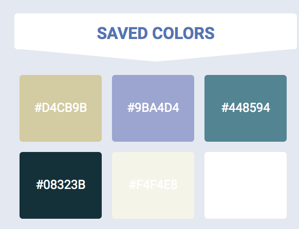

Palette
I am using the colors blue and gold for my website. The reason for this is because they are both professional colors and compliment each other well. I will also be using white to create a nice negative space in my website. I also used these colors to correlate with the temple colors.